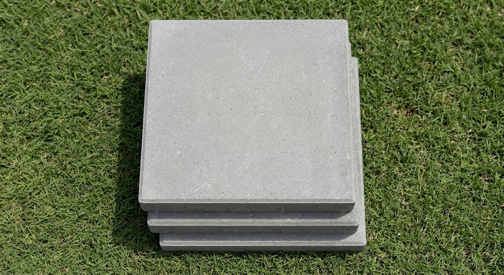
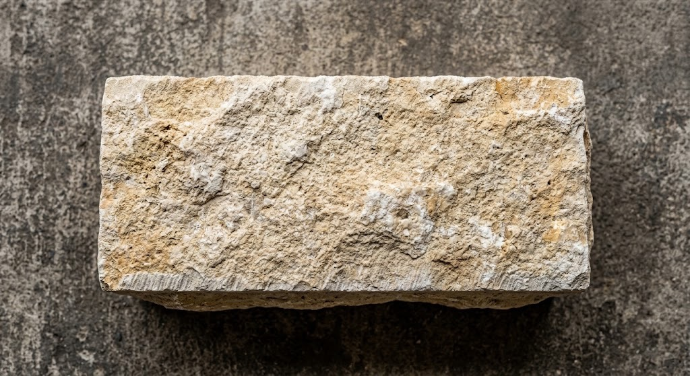
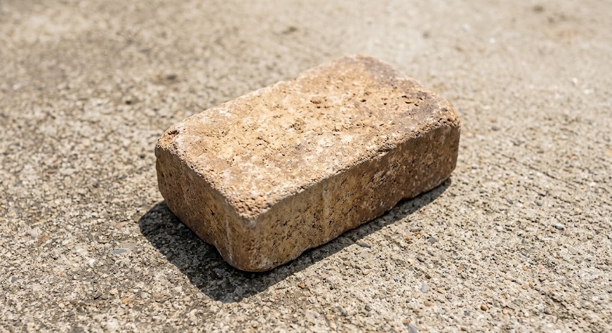
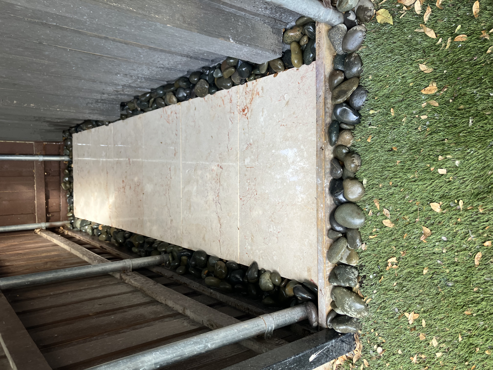

BRICK WORK & PAVE STONES
Professional installation of brick and paver features to add structure, function, and style to your outdoor space.
Get a Free EstimateChoose from a variety of materials to create the look and function you want for your outdoor space.

A versatile and durable option for patios, walkways, borders, and other outdoor areas. Available in multiple sizes.

Natural stone pieces with a rustic, textured appearance for landscape borders, walkways, and other outdoor features. Available in white, blue silvermist, autumn blend, brown, and granbury.

Small, textured stone blocks that create a clean, natural look for landscape borders, garden walls, edging, and other outdoor features. Available in multiple sizes.
We can source and deliver a variety of other brick, paver, and hardscape materials upon request. Contact us to discuss your project.
Get a Free EstimateWe can help with a variety of brick and paver projects, from landscape borders to outdoor walkways and other hardscape features.
Installation of pavers for walkways, patios, borders, and other outdoor areas.
Decorative brick borders can create clean, defined edges around landscape beds and other areas.
Brick and paver walkways can provide a durable and attractive path through your landscape.
We can replace damaged or uneven bricks and pavers as part of certain landscaping projects.
See examples of our brick, paver, and hardscape projects throughout the Dallas area.

We provide landscaping and exterior services throughout Lake Highlands and surrounding areas of the DFW Metroplex.
Contact us for a free estimate and let's discuss your project.
Get a Free Estimate